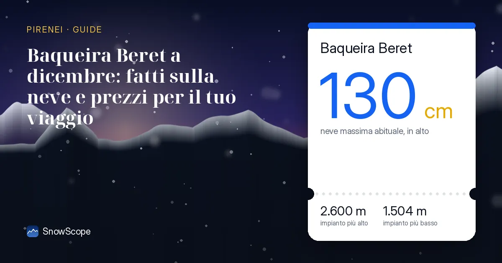

Baqueira Beret a dicembre: fatti sulla neve e prezzi per il tuo viaggio
Baqueira Beret, nella Val d'Aran, è uno dei grandi nomi dei Pirenei, ma è una buona scommessa per dicembre? Il nostro storico neve mostra un inizio di stagione modesto, quindi la settimana scelta conta più del solito.
Le previsioni neve in tempo reale per Baqueira Beret nell'app SnowScopeAltezza neve, allerte powder e mappa 3D, gratis.
La Val d'Aran e le sue vette
Baqueira Beret si trova in Spagna e offre una vasta area da esplorare. L'area sciistica mappata conta 154 km di piste e 36 impianti di risalita.
La stazione si estende dalla base degli impianti a 1.504 m fino alla cima a 2.600 m, offrendo un dislivello di 1.096 m.

La neve di dicembre in numeri
Guardando la nostra cronologia della neve di 46 inverni, dal 1980-81 al 2025-26, lo spessore della neve a dicembre è spesso piuttosto scarso alla base. A 1.504 m, lo spessore abituale a dicembre è di 8 cm, e quello del 15 dicembre è di 9 cm. Un dicembre povero di neve porta 0 cm o meno circa 1 inverno su 10, mentre un dicembre ricco di neve può raggiungere 37 cm o più circa 1 inverno su 10.
Più in alto, a metà montagna a 2.052 m, lo spessore abituale a dicembre è di 20 cm, con 19 cm il 15 dicembre. In cima agli impianti a 2.600 m, lo spessore abituale a dicembre è di 30 cm, e quello del 15 dicembre è anch'esso di 30 cm. A questa altitudine, un dicembre ricco di neve raggiunge 77 cm o più circa 1 inverno su 10.
Se guardi la percentuale di inverni con 30 cm o più a metà montagna, questa aumenta con il passare del mese: 22 percento dal 1 al 7 dicembre, 30 percento dall'8 al 14 dicembre, 35 percento dal 15 al 21 dicembre e 41 percento dal 22 al 28 dicembre. In cima, la percentuale di inverni con 30 cm o più è del 39 percento dal 1 al 7 dicembre, 46 percento dall'8 al 14 dicembre, 52 percento dal 15 al 21 dicembre e 59 percento dal 22 al 28 dicembre.
Il prezzo, verificato
I viaggi sugli sci richiedono un budget, quindi diamo un'occhiata ai costi verificati dal sito ufficiale per la stagione 2026-27. Un giornaliero adulto con la carta ricaricabile 'Baqueira Pass' costa 70,00 €. Se acquisti un 'Baqueira Ticket' standard per adulti per 1 giorno, il prezzo è di 74,00 €. Per un soggiorno più lungo, un 'Baqueira Ticket' adulto per 6 giorni ha un prezzo di 359,00 €.
Baqueira o Astún-Candanchú
È utile confrontare Baqueira Beret con Astún-Candanchú, un'altra destinazione spagnola. Astún-Candanchú ha un'area sciistica mappata con 35 km di piste e 17 impianti, con altezze che vanno da 1.659 m a 2.272 m, per un dislivello di 613 m.
Nella nostra cronologia della neve per Astún-Candanchú, la base a 1.659 m ha uno spessore abituale a dicembre di 18 cm e 13 cm il 15 dicembre. La sua cima a 2.272 m ha uno spessore abituale a dicembre di 38 cm e 29 cm il 15 dicembre. Per i costi ad Astún-Candanchú, un pass congiunto adulto di 1 giorno acquistato online per la stagione 26-27 è di 54,50 EUR, mentre alla biglietteria è di 59,50 EUR, e un pass congiunto adulto di 5 giorni acquistato online è di 237,00 EUR.
Prima neve e tendenza
Nella nostra cronologia della neve, il primo giorno abituale di neve duratura alla base è il 10 novembre. A metà montagna è il 8 novembre, e in cima arriva entro il 4 novembre.
Confrontando i periodi passati, la media di dicembre a metà montagna era di 17 cm a metà dei primi 15 inverni (1980-81 al 1994-95) e di 20 cm a metà degli ultimi 15 inverni (2011-12 al 2025-26). L'inverno scorso, a dicembre 2025, la media era di 9 cm alla base, 14 cm a metà montagna e 19 cm in cima.
La neve ora segna 0 cm alla base e a metà montagna, e 1 cm in cima, con 9 cm di neve fresca previsti nei prossimi 7 giorni in cima. Le previsioni di neve fresca a due settimane per la metà montagna e oltre indicano una media di 14 cm con un range da 6 cm a 22 cm.
Consigli per sciatori
- Punta alle ultime settimane di dicembre, come dal 22 al 28 dicembre, quando la percentuale di inverni con 30 cm o più raggiunge il 59 percento in cima.
- Soggiorna più in alto, intorno ai livelli di metà montagna e cima (da 2.052 m a 2.600 m), dove gli spessori di neve naturale sono più affidabili rispetto alla base.
- Acquista la carta ricaricabile 'Baqueira Pass' sul sito ufficiale per ottenere la tariffa giornaliera di 70,00 € invece di 74,00 €.
- Controlla sempre il bollettino valanghe locale prima di andare fuori pista, specialmente all'inizio della stagione quando gli strati di base sono sottili.
Altre mappe (siti esterni)
Riferimenti e crediti
- Baqueira Beret, official prices (tarifas), season 26-27 www.baqueira.es/es/tarifas
- Astún, official lift pass prices (tarifas 26-27) astun.com/forfaits/
- SnowScope, December snow at three heights and today's snow map snowscope.app/
Su questi numeri
Numeri della neve: storico neve SnowScope, 46 inverni passati (1980-81 - 2025-26) a tre quote di ogni località (un modello del passato corretto per la quota: una stima per un'area, non misure della località); dati di dicembre calcolati dalle altezze giornaliere di quegli inverni. Neve attuale e tendenza a due settimane: previsioni SnowScope (tendenza da ECMWF e GFS, un intervallo, non una promessa). Impianti e piste: mappatura OpenSkiMap. Prezzi: le pagine ufficiali qui sotto, lette il 2026-11-13; i prezzi possono cambiare, verificare prima di prenotare.
Bollettini valanghe ufficiali: Lauegi – Conselh Generau d'Aran
Cita questo articolo
Per ricerca, didattica o stampa: numeri e grafici sono liberamente riutilizzabili con licenza CC BY 4.0 citando così.
SnowScope (2026), Baqueira Beret a dicembre: fatti sulla neve e prezzi per il tuo viaggio, https://snowscope.app/blog/it/2026/11/baqueira-beret-december-ski-snow-odds-price-2026.html, consultato il 2026-11-14
SnowScope (Atlas Labs). (2026, November 14). Baqueira Beret a dicembre: fatti sulla neve e prezzi per il tuo viaggio. SnowScope snow reports. https://snowscope.app/blog/it/2026/11/baqueira-beret-december-ski-snow-odds-price-2026.html
BibTeX
@misc{snowscope2026baqueiraberetdecemberski,
author = {{SnowScope (Atlas Labs)}},
title = {Baqueira Beret a dicembre: fatti sulla neve e prezzi per il tuo viaggio},
year = {2026},
month = nov,
howpublished = {\url{https://snowscope.app/blog/it/2026/11/baqueira-beret-december-ski-snow-odds-price-2026.html}},
note = {Published 2026-11-14 13:29 UTC; accessed 2026-11-14}
}· CC BY 4.0 · Metodi, dati e strumenti →
Baqueira Beret: neve e temperatura per quota, quest'inverno vs lo scorso (strumenti) →
Segui Baqueira Beret
Gratis: un messaggio quando arriva la neve e il meteo ogni mattina.